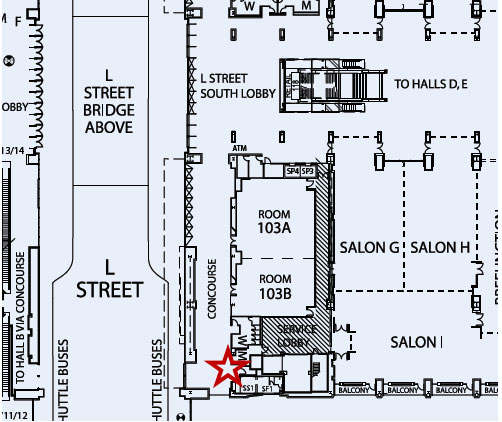
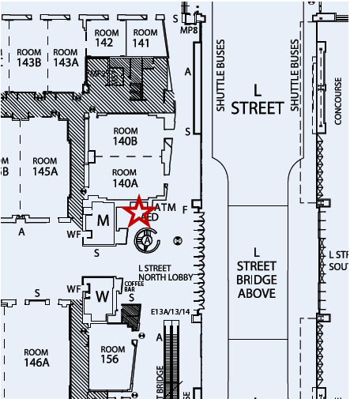

五月的 Washington DC，Walter E. Washington Convention Center 會湧進上萬名泌尿科醫師。這份指南不是官方手冊的翻譯——而是一個跑過三次 AUA 的人會想知道的東西：哪裡有免費咖啡、急診怎麼去、哪些 satellite symposia 值得用晚餐時間換。
會議時間是 5/14（Thu）到 5/18（Mon），但真正的學術密度集中在 Fri–Sun 三天。Monday 只剩半天 wrap-up，大多數人 Sunday 晚上就走了。
| 樓層 | 重點設施 |
|---|---|
| Lower Level | S&T Hall（展覽 + poster）+ The Square + AUA Café |
| Concourse | Hall A/B 通道 + The Exchange |
| Level 1 | Salon 系列（satellite symposia）+ ☕ Starbucks + Le Colombe |
| Level 2 | Plenary（主會場）+ Uptown Dining District |
| Level 3 | Ballroom A（satellite symposia） |
AUA 年會最常見的抱怨不是 poster 太擠或 Wi-Fi 太慢——是「午餐時間找不到東西吃」。Convention Center 周邊餐廳不多，上萬人同時放飯。搞清楚會場內的咖啡和食物分佈，等於省下每天 30 分鐘排隊時間。
| 地點 | 樓層 | 開門 | 特色 |
|---|---|---|---|
| AUA Café | Lower Level, The Square | 6:00–6:30a | 最早開、最大間，也最多人 |
| Bar Coffee | Level 1, Rm 156 Foyer | 6:30a | 人少！Fri–Sun 限定 |
| Le Colombe | Level 1, Allen Y. Lew | 7a | 精品咖啡，品質好但貴 |
| Starbucks | Level 1, L St Doors | 7a | 穩定、可預期 |
Le Colombe 和 Starbucks 全程開放（Thu–Mon, 7a–5p），不用擔心最後一天找不到咖啡。
AUA 官方的 complimentary 不多，但 satellite symposia 幾乎都附餐。真正的免費午/晚餐藏在 Industry Symposia 裡。
| 地點 | 時間 | 備註 |
|---|---|---|
| AUA Café | Thu–Sun, 最早 6a | Mon closed |
| S&T Hall Bistros × 3 | Fri–Sun, 11a–3p | 午餐主力 |
| Product Theater #2701 | Fri–Sun, 9:30a 起 | 每 45 min 一場 |
| 地點 | 時間 |
|---|---|
| The Exchange（Hall A/B 間） | Thu–Sun, 7a–4p |
| 地點 | 時間 |
|---|---|
| Bar Coffee（Rm 156 Foyer） | Fri–Mon, 6:30a 起 |
| Le Colombe（Allen Y. Lew） | Thu–Mon, 7a–5p |
| Starbucks（L St Doors） | Thu–Mon, 7a–5p |
| 地點 | 時間 |
|---|---|
| Uptown Dining District（Plenary Foyer） | Thu–Sun 7a–5p, Mon 7a–1p |
Satellite symposia 是 AUA 年會的隱藏福利——藥廠贊助、附餐、有些還給 CME。缺點是內容難免帶商業色彩，但如果你本來就對那個 topic 有興趣，等於免費晚餐 + 聽一線 KOL 講最新數據。全部在 Level 1 Salon 系列（除了 Level 2/3 三場）。
| 時間 | 主題 | 地點 | 備註 |
|---|---|---|---|
| 5:00–7:30p | Mt Sinai 10th Annual Innovations in Robotic Surgery 推薦 | Salon H | 十年了還在辦，內容有料。Robotic surgery 主場 |
| 5:30–7:00p | Breaking Barriers in cUTI Care | Salon C | Complicated UTI 新口服藥 |
| 7:30–8:30p | Mt Sinai Endo Urology Stone Symposium | Salon H | 接在 robotic 後面，不用換場 |
| 時間 | 主題 | 地點 | 備註 |
|---|---|---|---|
| 5:30–7:00p | Next-Gen Treatment Pathways in Prostate Cancer 推薦 | Salon H | mHSPC + mCRPC case-driven，跟 SAPA deck 直接相關 |
| 5:30–7:00p | Maximizing NMIBC Outcomes | Salon C | 和上面同時段，要二選一 |
| 時間 | 主題 | 地點 | 備註 |
|---|---|---|---|
| 7:30–9:30a | PSMA-Targeted PET & Radioligand Therapy Tumor Board | Level 2, 202A | Tumor board 互動形式 |
| 7:30–9:30a | Second Opinion: Localized RCC | Level 3, Ballroom A | 和 PSMA 同時段，選一個 |
| 12:00–1:00p | Prostate Cancer Forum Industry Lunch 免費午餐 | Salon H | 免費午餐 + PCa，不去白不去 |
| 1:00–2:00p | Bladder Cancer Forum Industry Lunch | Salon B | 接在 PCa lunch 後面，可連吃兩場 |
| 5:00–7:30p | Second Opinion: Prostate Cancer Management | Level 3, Ballroom A | 最後一晚 investigators' perspectives |
The Square 是 S&T Hall（展覽廳）的心臟地帶——把它想成醫院的 nurse station，所有人流交會的中心點。如果你跟別人約「在會場見」但沒指定地點，來 The Square 就對了。
今年因為 The Square 太受歡迎，部分功能擴展到 Level 2 Plenary Foyer：
| 日期 | 時間 |
|---|---|
| Thu 5/14 | 6:30a–6p |
| Fri 5/15 | 6:00a–6p |
| Sat 5/16 | 6:30a–4p |
| Sun 5/17 | 6:30a–3:30p |
| Mon 5/18 | 6:30a–Noon |
每年 AUA 的 History Exhibit 都是隱藏寶石——大多數人匆匆走過，但停下來看十分鐘往往是整個會議最有趣的體驗。今年的主題更酷：太空人在太空中怎麼處理泌尿問題。
展覽探索泌尿科在極端環境中的角色——太空、沙漠、極地、深海、高山、叢林。太空人面對的 urological challenges 出乎意料地多：微重力下的 renal stone formation 加速、太空衣內的排尿系統設計、長期太空旅行的 bone metabolism 對 calcium homeostasis 的影響。
Booth #2741，S&T Hall（Lower Level）。開放時間同 The Square。
身為醫師，你大概不會想到自己需要查「附近哪裡有急診」——但在異地出差，手機裡存好這些資訊是基本功。Convention Center 附近最近的 ER 要開 8 分鐘車。
| 醫院 | 地址 | 電話 | 距離 |
|---|---|---|---|
| Howard University Hospital | 2041 Georgia Ave NW | 202-865-6100 | 1.2 mi / 8 min |
| GW University Hospital | 900 23rd St NW | 202-715-4000 | 1.9 mi / 13 min |
| MedStar Washington Hospital Center | 110 Irving St NW | 202-877-7000 | 2.5 mi / 12 min |
| 機構 | 地址 | 電話 | 距離 |
|---|---|---|---|
| MedStar UC Navy Yard | 1103 Half St SE | 855-910-3278 | 2.4 mi / 9 min |
| MedStar UC Capitol Hill | 228 7th St SE | 855-910-3278 | 3.3 mi / 15 min |
| 機構 | 地址 | 電話 | 時間 |
|---|---|---|---|
| Washington Center for Dentistry | 1430 K St NW 8F | 202-223-6630 | Mon–Fri 7a–5p |
| Tend Dental 14th & U | 1439 U St NW | 202-539-9865 | Mon–Sat |
| 教派 | 名稱 | 距離 |
|---|---|---|
| Catholic | Immaculate Conception Church | 0.4 mi |
| Episcopal | Church of the Ascension & Saint Agnes | 0.3 mi |
| Presbyterian | Grace Downtown Church | 0.3 mi |
| Synagogue | Sixth & I | 0.3 mi |
| Mosque | American Fazl Mosque | 2 mi（需搭車） |
| 類型 | 號碼 |
|---|---|
| Emergency | 911 |
| Non-Emergency | 311 |
DC 每年接待數百萬遊客，整體治安不差，但 Convention Center 附近的 Mt Vernon Triangle / Shaw 區域不算最安全。AUA 官方特別強調的幾件事，翻成白話就是：「這裡人多手雜，管好你的東西。」
DC 的 Homeland Security 提供 AlertDC 系統，訪客也可以訂閱 email 或 text 通知。DC 有 19 條疏散路線，路上有標示。
| 類型 | 號碼 |
|---|---|
| Emergency | 911 |
| Non-Emergency | 311 |
AUA 的官方 App 用 Swapcard 平台建的——同一個平台也管 abstract submission 和線上議程。App 已經上線，現在就可以下載並開始排行程。
| 平台 | 方法 |
|---|---|
| iOS | App Store 搜尋 "AUA2026" |
| Android | Google Play 搜尋 "AUA2026" |
| Web | 線上版（不需安裝） |
AUA 年會是 ACCME 認證的 CME 活動，所有 session 都可以拿 AMA PRA Category 1 Credits™。對台灣醫師來說，這些學分回去換算成台灣繼教學分需要另外申請，但 AUA 的 Certificate of Attendance (COA) 本身就是很好的佐證文件。
可追溯期間：5/14–8/31。錯過的 session 可以在 8 月底前看隨選回放再 claim。
| 項目 | 內容 |
|---|---|
| 認證機構 | ACCME（透過 AUA） |
| 學分類型 | AMA PRA Category 1 Credits™ |
| 總學分數 | TBD（官方尚未公布） |
| 非 MD/DO | 可發 participation documentation，非正式 CME |
Walter E. Washington Convention Center 是一棟巨大的建築，南北跨好幾個街區。會議活動分散在五個樓層，搞清楚哪層有什麼是第一天不迷路的關鍵。


| 從 | 到 | 怎麼走 |
|---|---|---|
| S&T Hall (Lower) | Plenary (Level 2) | 搭 Concourse 手扶梯上兩層，或走 Hall B Foyer 電梯 |
| Plenary (Level 2) | Salon H (Level 1) | 下一層，往南走到 L St 側 |
| Registration | The Square | Registration 在 The Square 內（Lower Level, Hall B） |
| Convention Center | Marriott Marquis | 9th St 地下通道直通，不用出門淋雨 |